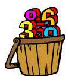

|  | Prime Oddities |
For the present, this page is only meant to be a storage place for curious and odd facts that WTM has discovered while researching prime numbers and the prime factorizations of various composite numbers. The dates indicate when the item was submitted for posting in the website Prime Curios.
Palindromes and Prime Factorizations
It looks like we're on to something here. Let's continue with a larger palindrome: 9876789. Its prime factorization is
No "beastly" number here, you say. Ah, but look closely as we re-arrange those prime factors a little...
which yields the following...
...and it looks as though our beast is growing up!
There are certainly more palindromes to investigate. Try these. Your task is to re-arrange the primes to produce a pair of numbers that has a sum of "all 6's". Sometimes it's easier than others.
Postscript (9/3/01): Another presentation of the concept above can be found in Patrick De Geest's The World of Numbers, as WON plate 112.
That should make you wonder about 1481481. It is easily seen that it is not prime -- the sum of its digits is a multiple of 3 -- so it must have a prime factorization. If you divide it by 3, then 3 again, then by the largest 2-digit prime, you will see a nice result.
Now we have three numbers that form a "family": 1481, 1481481, and 1481481481. And two of those were prime.
I'll bet you know what the next question will be, right? Naturally, what happens if we use more blocks of "148"? It should be obvious that our numbers become rather large; so we feel it's time for a little new notation. We will illustrate our method with the 3rd number: 1481481481.
It has three blocks of "148". We will show this as (148)3. So with the final "1", our number looks like this:
In general, we denote our numbers in this way:
It just so happens that we have checked the values of k up to 14. Here is what we found:
Can anybody go further?
Let's now turn our attention to the "mirror images" of our numbers. Reversing 1481 gives us 1841. But while 1481 is prime, its reversal is not. Proof: 1841 = 7 x 263. You see, changing the positions of the "8" and "4" made a big difference.
Does reversing digits in 1481481 make any difference? That is to say, could its reverse (1841841) now be prime? Unfortunately, the answer is NO. The reason is that changing digit-order does not change the sum of the digits of the number. It is still a multiple of 3. (Can you find its prime factorization?)
However, for (148)3 ... 1, change does have a big effect. Now (184)3 ... 1 is composite. Here is a partial factorization. Can you finish it?
Are you ready for a big surprise now? Here 'tis...
Continuing with this theme, we can now state: (184)k ... 1 is composite for k = 5 to 11. Beyond that is unexplored territory.
After further thought, WTM has decided to call any prime that starts with the digit "1", and ends with the digit "1", as a sandwich prime.
Our first such prime occurred in the palindrome investigation above: 1481. The extreme digits, the 1's, serve as the "slices of bread", and any other digits represent the fillings.
And if we continue repeating the block of digits as shown in other numbers above, we have a refinement in our new name: Dagwood primes! (Recall the famous character in the comics, Dagwood Bumstead, who often made multi-layer sandwiches with extra slices of bread separating his fillings.)
So our first Dagwood prime to be offered is this: 1481481481.
Our investigation of sandwich primes has turned up some interesting results, which we will share with you now.
We begin by noting that our research of 1481 was inspired by the factorization of the palindrome 9876789, and then the factor 4443. The factors of 4443 are 3 and 1481. So it seemed a natural extension to examine the number 5553.
Step 1: 5553 = 3 x 1851. But 1851 is not prime; it is 3 x 617.
Step 2: Let's repeat it in this manner: 1851851. Bingo! A sandwich prime, of the Dagwood variety!
Step 3: And repeating again -- 1851851851 -- yields an even bigger prime!
Step 4: Unfortunately, further repetitions, up to k = 12, yield no more primes.
We may summarize the foregoing this way: (185)k ... 1 is prime for k = 2, 3.
Reversing the digits in this manner gives this:
Wow! Look at that last value for k. That's special. Here it is, in full glory:
Here is a table, summarizing all the data gathered to date (k < 13):
| (148)k ... 1 | 1, 3, 4 |
| (184)k ... 1 | 4 |
| (158)k ... 1 | 2, 12 |
| (185)k ... 1 | 2, 3 |
| (123)k ... 1 | 1, 2 |
| (132)k ... 1 | 1, 6, 10 |
| (147)k ... 1 | 1, 7 |
| (174)k ... 1 | 1, 2 |
| (138)k ... 1 | 1, 2 |
| (183)k ... 1 | 1, 2, 3, 4, 6, 11 |
| (115)k ... 1 | 1, |
| (151)k ... 1 | 1, 3, 4, 6 |
| (102)k ... 1 | 1, 4, 5 |
| (120)k ... 1 | 1, 2, 3, 7, 12 |
| (103)k ... 1 | 1, |
| (130)k ... 1 | 1, 3 |
| (106)k ... 1 | 1, |
| (160)k ... 1 | 1, |
| (109)k ... 1 | 1, 4, 12 |
| (190)k ... 1 | 1, 7 |
| Comments? Send e-mail. | Back to top | Go back to Home Page | Go back to Contents |